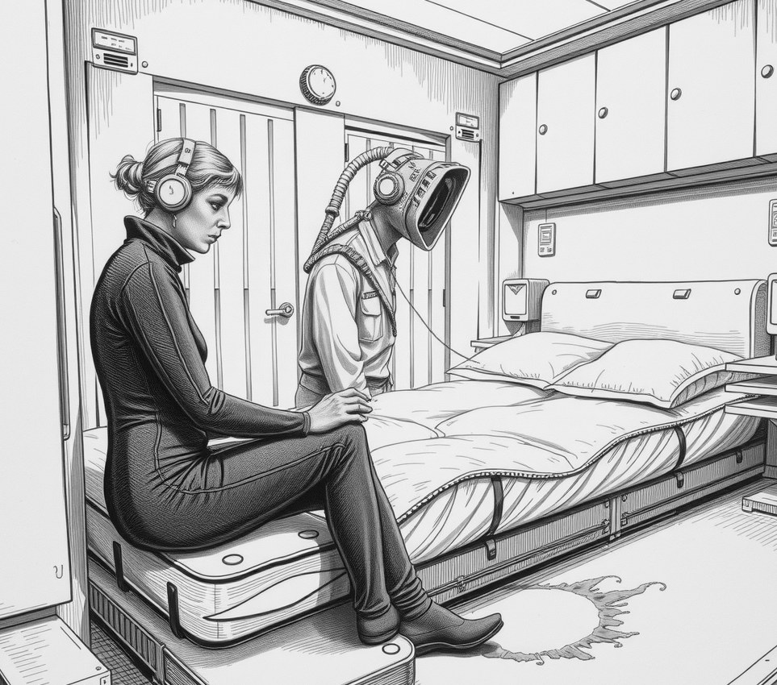

Habitation Ring Four . 14 August 5855

Soraya Blythe and her husband abandoned their separation on Friday after a colony of escaped hull-cleaning barnacles calcified their shared mattress into a deckplate and became a vital oxygen organ for Habitation Ring Four.
The pair had agreed to divide their quarters in November. Before the partition could be installed, a jar of bio-scrapers leaked into the mattress lining. The crustacean colony consumed the synthetic filling, fused the frame to the structural deck, and now filters seven percent of the district's breathable air.
Removal is forbidden under environmental law.
Every morning, three life-support technicians enter the bedroom. They polish the bedposts, clear the mattress's gill valves, and threaten Haruto with a treason charge if his snoring drops the ambient pressure.
"Haruto stays on the port side and I stay on starboard," Ms Blythe said. "If either of us rolls into the centre, the primary school down the corridor loses six percent of its oxygen, which is a terrible look on a marriage counsellor's report."
The couple tried arguing through a foam wall last month. However, air monitors logged an immediate drop in oxygen output whenever voices were raised.
The crew now enforces quiet hours.
Ms Blythe reads silently while her husband feeds the bedposts plankton broth. Environmental officers expect the bed to expand into the hallway by mid-century, at which point the housing authority will classify the couple as a public park.